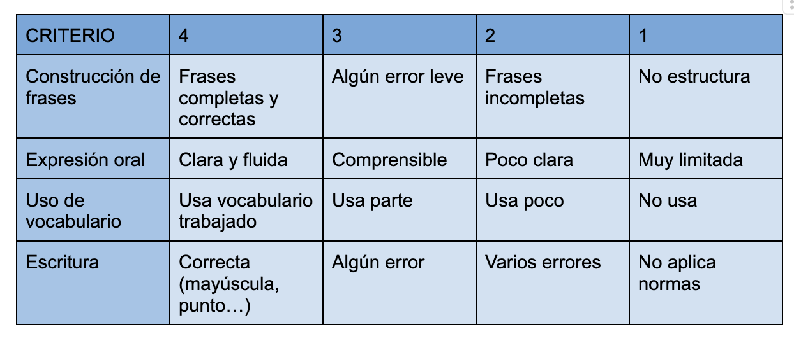
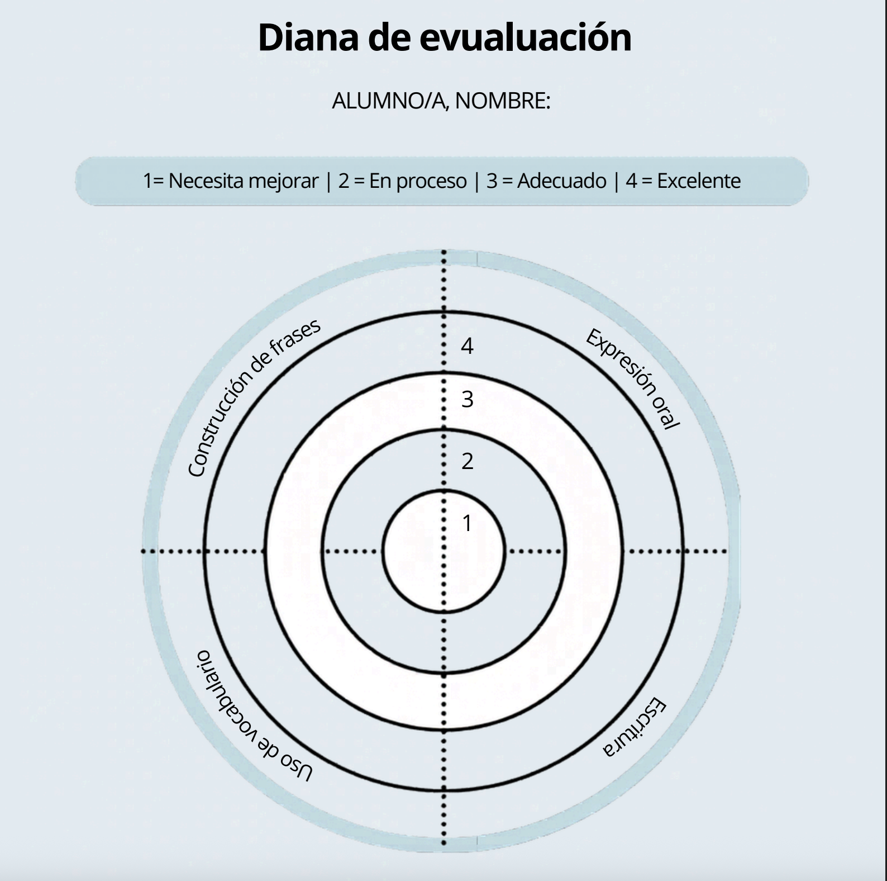

Rúbrica y diana de evaluación
En este caso, voy a evaluar a mi alumnado a través de una rúbrica y una diana de evaluación:
RÚBRICA
Es una tabla que define qué vas a evaluar estableciendo niveles de logro claros. Además, permite observar el progreso de forma objetiva
Qué evaluará
La rúbrica permitirá valorar:
- Comprensión lectora,
- Expresión escrita y oral,
- Adecuación, coherencia y cohesión textual,
- Uso correcto de normas ortográficas y gramaticales,
- Creatividad y capacidad crítica,
- Participación y trabajo cooperativo,
- Grado de adquisición de las competencias específicas.
Cómo se obtendrán los datos
Los datos se recogerán mediante:
- Observación directa
- Análisis de tareas y producciones
- Exposiciones orales
- Trabajos individuales y grupales
- Intervenciones en clase
Qué variables pueden aparecer
Pueden darse situaciones como:
- Alumnado con buena competencia oral pero dificultades escritas
- Alumnado con ansiedad ante exposiciones
- Diferencias en el ritmo de trabajo
- Desigual participación en tareas cooperativas
- Influencia del contexto familiar o lingüístico
Cómo se tratarán esas variables
- Se combinarán varios instrumentos de evaluación
- Se realizarán observaciones en distintos momentos
- Se valorará tanto el proceso como el producto final
- Se adaptarán criterios en alumnado NEAE cuando sea necesario
- Se fomentará la autoevaluación y coevaluación para contrastar percepciones
Cuándo se utilizará
La rúbrica se empleará:
- Al inicio de las tareas, para que el alumnado conozca los criterios de evaluación
- Durante el desarrollo de las actividades, como guía de mejora
- Al finalizar productos o tareas competenciales (exposiciones, comentarios de texto, debates, producciones escritas, proyectos, etc.).
Cómo se utilizará
La rúbrica será compartida previamente con el alumnado para favorecer la transparencia y la comprensión de los objetivos de aprendizaje. Se aplicará:
por parte de la docente (heteroevaluación)
por el propio alumnado (autoevaluación)
en determinadas actividades cooperativas, mediante coevaluación
A continuación, adjunto la rúbrica en cuestión.

DIANA DE EVALUACIÓN
Es un instrumento visual y autoevaluativo tipo diana. Cada “aro” representa un nivel, siendo el alumnado quien marque cómo cree que lo ha hecho
Qué evaluará
La diana se utilizará principalmente para:
-Autoevaluación
- Percepción del propio aprendizaje
- Implicación y esfuerzo
- Seguridad en las tareas realizadas
- Percepción del trabajo cooperativo
Cómo se obtendrán los datos
El alumnado valorará distintos aspectos mediante escalas visuales al finalizar actividades o proyectos.
Qué variables pueden aparecer
- Infravaloración o sobrevaloración del propio trabajo
- Influencia de las opiniones del grupo
- Estado emocional o motivación del momento
- Dificultades para comprender los indicadores
- Falta de hábito en la autoevaluación
Cómo se tratarán esas variables
- Se explicará previamente el funcionamiento y finalidad de la diana
- Se fomentará un clima de confianza y reflexión
- Se utilizará de manera continuada para mejorar la sinceridad y capacidad de autoanálisis
- Se adaptará el lenguaje a la edad del alumnado
- Sus resultados se contrastarán con otros instrumentos, como rúbricas, observación directa o producciones escritas
Cuándo se utilizará
La diana de evaluación se utilizará principalmente al finalizar actividades, proyectos o situaciones de aprendizaje. También podrá emplearse en momentos intermedios para comprobar el progreso del alumnado y favorecer la reflexión sobre su proceso de aprendizaje.
Cómo se utilizará
La diana se empleará como instrumento de autoevaluación y reflexión personal. El alumnado valorará de forma individual aspectos como:
- Su grado de aprendizaje
- Participación
- Esfuerzo
- Implicación
- Trabajo cooperativo
A continuación se adjunta la diana en cuestión:
